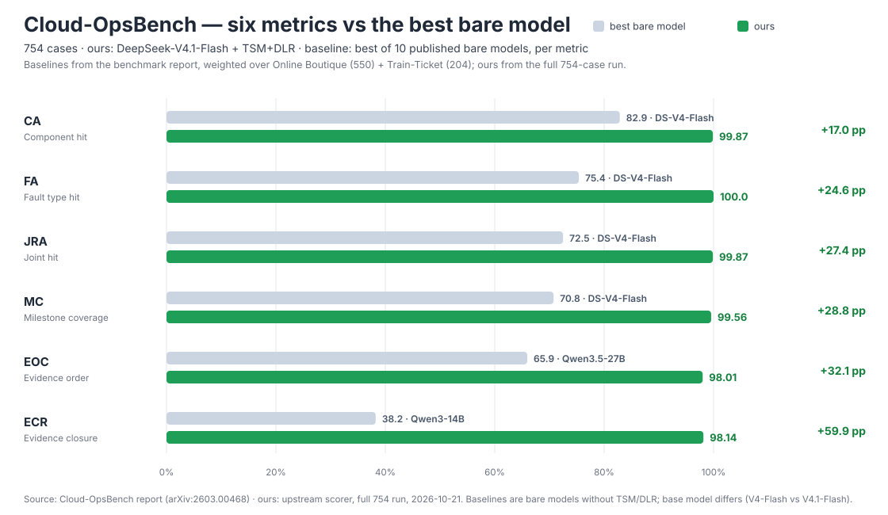
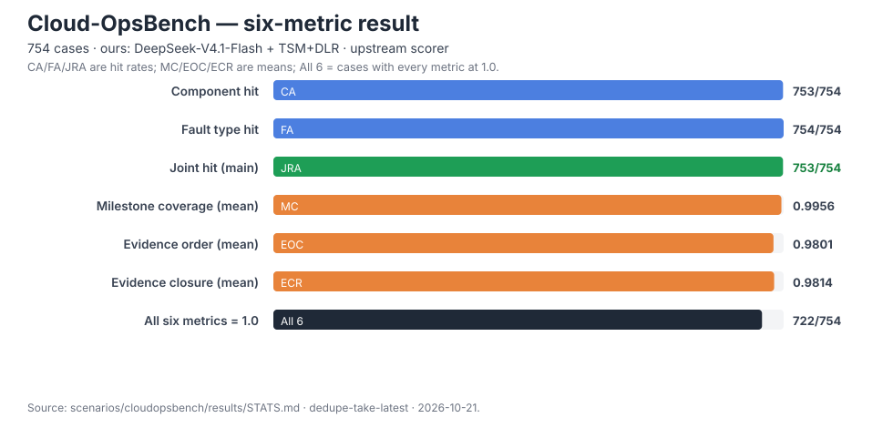
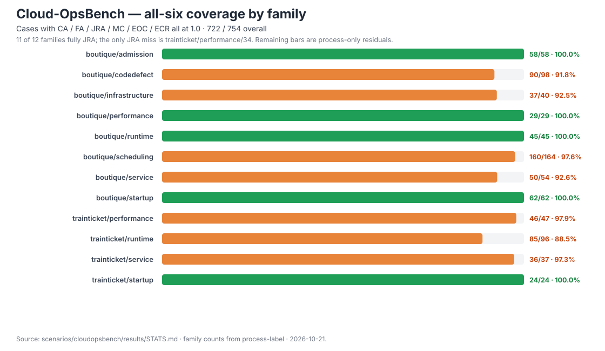

DLR + TSM：一套逐层建模、逐层消歧的方法；两个全量验证场景。
从 ready to machine，到 ready to human
LE / PE 解耦，ARCS 纵向锚定、PAS 横向路由；birdmini 500 题全部判定正确。
COB 用 5 节症状措辞覆盖 754 例；JRA 753/754，ECR 98.1%。
MCP 工具面、LanceDB + ONNX、内存图 / Neo4j 双轨；唯一外呼是 LLM API。
不是两个 demo：从建模、检索、执行到判分的全量闭环，且判分口径可复现。
同一句话，在不同场景里可能是断言，也可能是规则。层级不在文字里，在读它的人把它当什么用。
语义层不擅动 schema，但对 schema 的描述享有 correction 权：表还是那张表，可以写“此表名为 X 实为 Y，按 Z 理解”。
实例文本亿级、持续膨胀；语义骨架千级、稳定。体系只存“去哪类”的路由条目，内容留在业务系统，运行期再拉取。
不凭空构建本体，不以知识完备为目标，不为还没产生的数据建模。资产不换，只补说明。
语义层的使命：把现有 ICT 资产——数据、知识、API——语义化，从 ready to machine 到 ready to human。
这个领域有什么：业务概念、落在哪、怎么连。
维护：数据侧 · 随 schema / 数据源演进题面用词怎么算、怎么过滤：术语→值、公式、口径、背景。
维护：领域业务人员 · 随业务口径这类问题怎么裁：打法、例外、陷阱、链序纪律。
维护：业务人员 · 随流程 / 打法把物理表投影成视图：A 锚定键、R 行空间、C 列选择、S 语义补注。碎表、宽表、关联表对 Agent 透明。
LE 之间只声明“关联存在 + 起点坐标”，路径由 Agent 找。模型给导航语义，不给执行计划。
核心度量、高频过滤列升 public，进 LE 面与向量；其余留在 PE，下探可见。影响效率，不影响正确性。
每层只解决本层能客观判定的歧义；解决不了，向上开一层。硬压会把问题挤到另一层弹回来——按下葫芦浮起瓢。
物理表天然有歧义：碎表、宽表、同名异义列、多槽位 FK。PE 用视图消歧；PE 仍有歧义，LE 用“可指认对象 + public 面 + PAS”消歧。
L1 只回答“数据怎么存”；题面用词 ↔ 模型的映射归 L2；L1 + L2 的真实业务冲突或系统级冲突，归 L3 做题级裁决。
11 库 · 50 LE / 74 PE / 37 PAS；图 1,185 节点；LE description 是路由质量的唯一信号。
11 个 namespace · 91 条共识；术语映射、公式口径、领域背景。
180 节，按题分节；只取命中本题的那一节，节变长不再有全局成本。
74 题是数据集缺陷 / 口径冲突的裁定结果，按 SOP 单独计，不并入正确；判定口径与台账逐项互证。
| 指标 | 本方案 | 最强公开裸模型 |
|---|---|---|
| JRA | 99.87%（753/754） | 72.5%（DeepSeek-V4-Flash） |
| ECR | 98.1%（740/754） | 38.2%（Qwen3-14B） |
上游基线取基准 README 的 10 个公开裸模型，按 550 / 204 加权；模型与运行条件不同，仅作量级参照。
2 系统两份文件 · 169 LE / 355 PE / 233 PAS；53 个服务 + 节点 + 命名空间；观测面带锚定读法。
15 条；schema 级读法 + 症状→链映射；按槽类聚类，不按系统。
5 节；按症状措辞逐字命中；节内是决策树，不是一条答案。
10 个公开裸模型按 550/204 加权，我方取 754 全量。每项都高于最强裸模型；ECR 的差距最大（+59.9 个百分点）。

基线为无 TSM/DLR 的裸模型，且基座不同（V4-Flash vs V4.1-Flash），仅作量级参照；完整 10×6 矩阵见 README。


JRA / CA / FA = 结果分；MC / EOC / ECR = 流程分。全六项链 1.0 = 722 / 754；唯一 JRA 残留 = trainticket/performance/34。
节标题 = 题面症状措辞，逐字命中；节内不是一条答案，而是一棵按证据走的分支树。
同一症状措辞下可能是多个机制。节只锁定“哪一族”，具体分支由链上实际观测决定——这就是 SOP 分层。
EOC 是严格单遍级联：链头倒位，整条证据链会塌到 1/4。L3 的主体不是结论，是走链纪律。
dlr 7 个：召回 / 映射 / L2 / L3 / 执行 / 下探。dlr-state 3 个：状态模型切片 + 两个检索。
5 个 npm 包；路径从包自身推导 + env 覆盖；测试机不装 Neo4j 也能跑通验收。
图、向量、编码器、建模产物全在本地；唯一外呼是 LLM API，可指向私有部署。
工程护栏：execute_sql 子进程 + 20s 硬超时，防病态 SQL 钉死单线程服务；判分与跑题解耦，可回放取证。
题面 + 期望 + 口径来源；答案键 74 处取 L3 节口径、426 处取 gold；生成器可复现，与台账逐项互证。
考卷本体是上游基准；场景包只放转换 / 判分适配器。判分 = 上游 scorer（CA/FA/JRA + MC/EOC/ECR/EE）。
2.0 判定的三层：① 与 gold 比对（只认 Final Answer 结论句）② 结果集比对（只救假阴性）③ SOP 裁定（数据集缺陷 / 口径冲突）。
L2 随 LE 分层 / 按 LE 隔离；全局成立的 SOP 口径下放到 L2。
用第三个真实企业数据域验证“换场景”与层重跷跷板。
introspect → 草稿 → 评审，让建模从手写 YAML 走向半自动。
以数据架构为纲 · 逐层建模、逐层消歧 · 用两个全量场景证明方法可落地。
数据来源：scenarios/*/results/STATS.md · DETAIL.md；docs/01–04、run、eval、roadmap